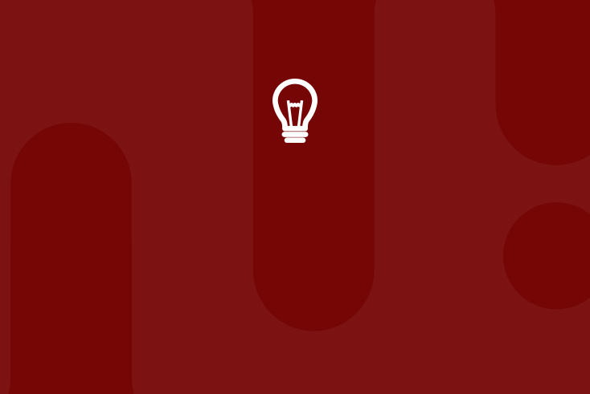
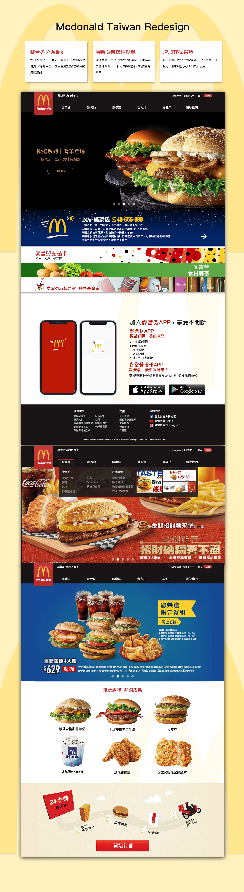
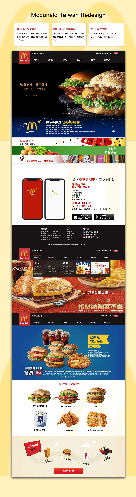
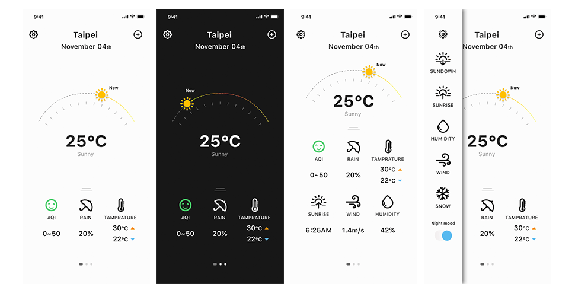

© LyT design

Ideas
-
關於網頁、APP、Redisgn或視覺上的概念發想
About some idea for Web, App, Redesign and Visual.
-
ROLE
Web design
UI design
Visual design -
Tool
Photoshop, Sketch, Illustration
-
2019 The F2E - Week1 蕃茄鐘

-
麥當勞官網Redesign (自主練習)
麥當勞官網一直都處在舊有的狀態裡，可能基於龐大的功能關係無法動得，也因此此redesign單就網頁的介面以及流程做改善！
 

-
多肉植物百科 - 肉知識
看到喜歡的多肉卻不知道他的品種？珍貴的多肉植物不知道怎麼照顧？只要手機對準植物一照，AI馬上會告訴你您的心愛植物的種類以及全套的照顧方法！
此 APP 除了百科，你能將自己的照片與描述發布在論壇詢問廣大的多肉朋友您的植物的狀況，還能讓你找到附近有經營多肉植物的店家，若您想參加多肉植物的活動，我們也會有顯示哪邊正在舉行或即將舉行的多肉活動喔！

-
天氣App
原發想是希望設計一個可以自定自己想要關注的天氣型態，例如空氣品質、降雨機率、氣溫等等，因應各種不同職業或著喜好關注的人。
